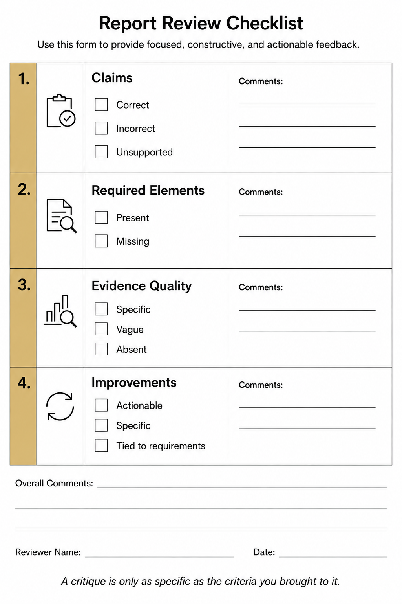

Engineering Critique — The Meta-Skill of Evaluating Another's Engineering Work
Why the ability to evaluate a report matters as much as the ability to write one
The most important thing a reviewer can tell you is not what you got wrong. It's what you assumed was obvious but left out.
Engineers spend years learning to produce: to design experiments, collect data, propagate uncertainty, and write the result. Far less time is spent learning the complementary skill: reading another engineer's work and determining, precisely and charitably, whether the argument holds. Yet engineering critique is not a peripheral academic exercise. It is the mechanism by which engineering knowledge is verified before it is trusted. Every technical report that crosses a program manager's desk, every analysis that feeds a design decision, passes through someone's judgment of: does this argument hold, and what is missing?
 *This image makes the role shift visible so you can treat peer review as a different engineering task from drafting, not just a second pass at your own writing.
*This image makes the role shift visible so you can treat peer review as a different engineering task from drafting, not just a second pass at your own writing.
Engineering critique is the practice of evaluating another person's engineering argument, not for aesthetic quality or writing style, but for structural validity: are the claims correct, are they supported by the evidence shown, does the work meet the requirements of the assignment, and what structured feedback would help the author improve it? The four-part framework below is the structure that makes this evaluation rigorous rather than impressionistic. You are committing to it before you read, for exactly the same reason you commit to a validation metric before you compute: naming your evaluation criteria in advance prevents you from finding what you hoped to find rather than what is actually there.
Part 1 — What is correct and well-supported. Every critique must begin here. Identifying what is done well is not a formality or a softener; it's a calibration exercise. If you cannot point to specific evidence that supports a claim, you have not evaluated it; you have reacted to it. A claim is well-supported when the calculation is shown, the intermediate steps are traceable, and the conclusion follows from the numbers. "The uncertainty analysis is complete" is not a valid observation unless you can cite the specific propagation steps and confirm they are present.
Part 2 — What is incorrect or unsupported. A claim is incorrect when the calculation is wrong or the conclusion contradicts the data shown. A claim is unsupported when the conclusion is present but the calculation that would support it is absent. These are different failure modes and require different responses. An incorrect claim needs correction; an unsupported claim needs the missing work to be shown. A common unsupported claim in validation work: "The measurement agrees with the model," stated without showing the numerical comparison at all. Agreement is a conclusion that requires an argument, not just an assertion.
Part 3 — What is missing. This is the category most evaluators underuse, and it is where the deepest value in a critique lies. Missing elements are structural absences: the required calculation is not there, the confidence level is not stated, the validation metric is not pre-committed, the residual analysis is not shown. Unlike an incorrect claim, a missing element cannot be corrected by revising what is written; it requires adding work that was never done. Identifying missing elements requires knowing the assignment requirements well enough to notice their absence. This is why the course requires pre-committed criteria in every deliverable: both for the student writing and for the student evaluating.
Part 4 — What specific improvements would most strengthen the report. Critique that ends at diagnosis is incomplete. The fourth part of a defensible evaluation asks: given the errors and absences identified, what specific actions would most improve this work? Not "add more analysis," but "state the validation metric and acceptance threshold before presenting the numerical comparison, and show the intermediate calculation steps." The test of a specific improvement is whether the author could act on it without asking a clarifying question. Vague feedback is not useful feedback; it is a signal that the reviewer stopped before finishing the evaluation.

*This image shows the level of structure a useful critique needs so feedback stays tied to evidence and requirements rather than drifting into vague impressions.
Peer evaluation is engineering critique of a live presentation. The Week 3 exercise asks you to evaluate a written report; the Phase 3 lightning talk asks you to evaluate a peer's spoken presentation. The same four-part structure applies, with one adaptation: the evidence you cite must be specific to what was said, shown, or omitted in the talk, not a general impression. "The uncertainty analysis was unclear" is not an observation; "the presenter stated a final result without showing how the sensor spec uncertainty was propagated into the derived quantity, which the rubric requires" is one. Vague praise ("the talk was well-organized") does not meet the standard; specific praise does ("the risk assessment named two physically motivated anomalous patterns before describing the outcome, which is the required structure"). The grading standard for a peer evaluation is the same as for any other deliverable: a claim without specific evidence is not a defensible claim.
The Takeaway: Engineering critique is a skill, and like all skills it must be practiced against defined criteria. Name the four questions before you read or listen, apply them specifically, and your structured feedback becomes the kind of evidence-based argument the course requires of every deliverable. The engineering critique exercise in Week 3 is your first graded practice, and the same four-part structure will appear in every peer evaluation and segment debrief through Phase III.